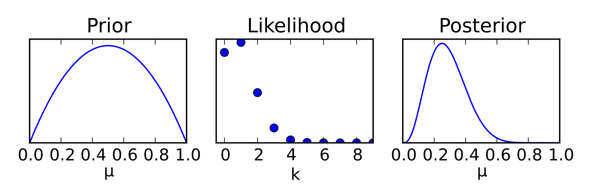

Begin with the outside view
When judging a new AI workflow, the vivid demo is only one observation. Start with the base rate: how often does the current process succeed, how long does it take, and what is the failure cost? Then ask what evidence makes this case different. Record an estimate as a range, not a slogan. Separate what you know from assumptions and what you would need to observe to change course.



Ray Dalio’s published principles argue for explicit expected-value thinking, weighing information against delay, and seeking credible disagreement. Those are one practitioner’s framework, not a universal proof that a particular choice is right.
Make the first bet reversible
Choose a small experiment with a stop rule. For an agent workflow, hold out tasks the team has not tuned against. Compare validated success, human review time and cost with a simple baseline. Decide in advance what result justifies expansion, revision or abandonment. Protect against low-probability but unacceptable outcomes with limits on authority and spending.
A team expects an agent to save 30 minutes per case. A two-week pilot measures 14 minutes saved on average, but review adds 20 minutes for high-risk cases. The decision becomes “use it for low-risk drafts,” not “deploy everywhere.”
Review the process, not only the outcome
A decision journal records date, alternatives, probabilities, assumptions and stop conditions. Later, compare outcomes with those expectations. A good decision can lose once; a weak process can get lucky. Over many decisions, calibration matters more than the story told after the fact.
Read the original sources
- Dalio, PrinciplesThe author’s decision-making framework; use as a lens, not a law.
- Google Rules of MLPractical counsel on baselines, measurement and incremental ML deployment.
- Rbb · Prior, likelihood, posteriorWikimedia Commons figure by Rbb; converted from SVG to PNG.